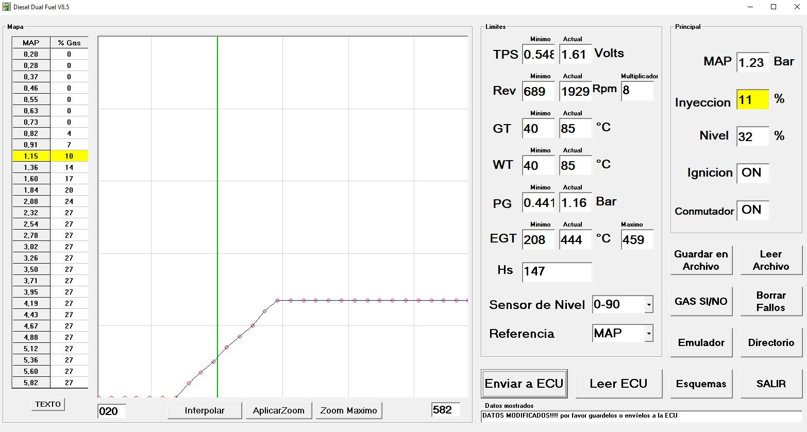
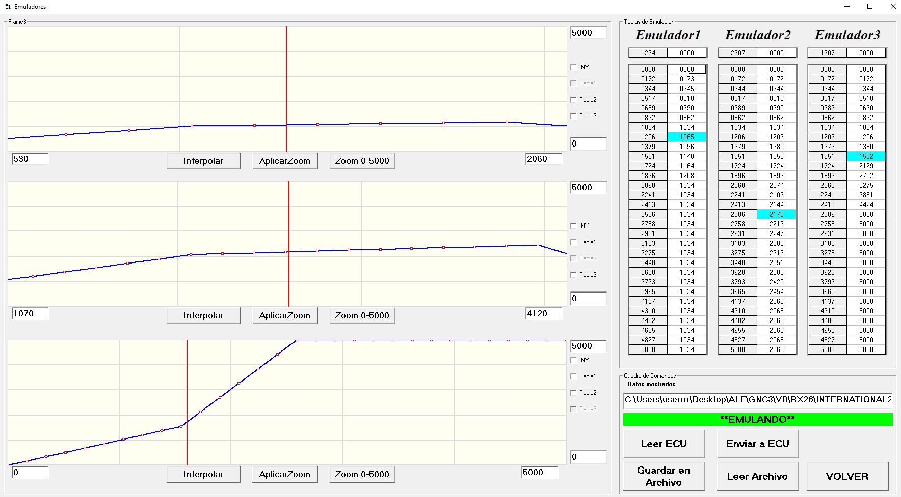
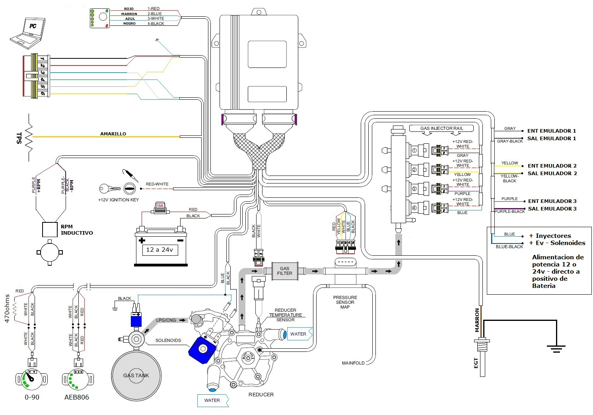

DGNC65 es una centralita electrónica diseñada para sistemas Diesel Dual Fuel. Permite controlar la cantidad de combustible gaseoso suministrado al motor en función de la carga y de diferentes parámetros de funcionamiento.
La configuración se realiza mediante el software Diesel Dual Fuel para Windows. Desde el programa es posible modificar el mapa de inyección, visualizar sensores en tiempo real, establecer límites de funcionamiento y configurar los canales de emulación.

En el sector izquierdo se encuentra la tabla de programación MAP / % Gas y su correspondiente representación gráfica.
La línea vertical indica la posición actual dentro del mapa y permite visualizar la zona de funcionamiento del motor.
En la sección de límites se muestran tanto los valores configurados como los valores actuales medidos por la ECU.
| Variable | Función |
|---|---|
| TPS | Posición del acelerador y posible referencia de carga. |
| Rev | Régimen del motor en RPM. |
| GT | Temperatura del gas / reductor. |
| WT | Temperatura del refrigerante del motor. |
| PG | Presión del combustible gaseoso. |
| EGT | Temperatura de gases de escape. |
| Hs | Horas acumuladas de funcionamiento a gas. |
El mapa permite definir el porcentaje de combustible gaseoso aplicado en función de la carga del motor.
La referencia puede seleccionarse entre MAP o TPS. Los valores intermedios son calculados mediante interpolación entre los diferentes puntos de la tabla.

DGNC65 dispone de tres canales independientes de emulación. Cada canal utiliza una tabla de 30 puntos y una representación gráfica.
Los valores pueden modificarse manualmente o mediante interpolación. También es posible utilizar las funciones de zoom para trabajar con mayor precisión sobre una determinada zona de la tabla.
Las tablas pueden:
Los emuladores pueden utilizarse para modificar o reproducir señales analógicas del vehículo cuando la instalación lo requiere.
El sistema permite seleccionar diferentes tipos de sensores de nivel. Entre las configuraciones contempladas se encuentran sensores resistivos 0-90 ohm y sensores AEB806.

El esquema muestra las conexiones principales de la centralita, incluyendo alimentación, sensores, entrada de RPM, inyectores, electroválvulas y canales de emulación.
| Conexión | Descripción |
|---|---|
| Batería | Alimentación principal 12 a 24 V con fusible de protección. |
| Ignición | Entrada de positivo bajo llave. |
| RPM | Entrada para captación inductiva de régimen. |
| TPS | Entrada analógica de posición de acelerador. |
| MAP | Señal utilizada como referencia de carga. |
| PG | Sensor de presión de gas. |
| GT | Sensor de temperatura del gas. |
| WT | Temperatura del refrigerante. |
| EGT | Sensor de temperatura de gases de escape. |
| Emulador 1 | Entrada gris / salida gris-negro. |
| Emulador 2 | Entrada amarilla / salida amarilla-negro. |
| Emulador 3 | Entrada púrpura / salida púrpura-negro. |
La instalación y calibración del sistema debe ser realizada por personal con conocimientos de sistemas Diesel Dual Fuel.
Antes de habilitar la inyección de gas deben comprobarse las alimentaciones, masas, fusibles, sensores, presión del sistema y estanqueidad de la instalación.